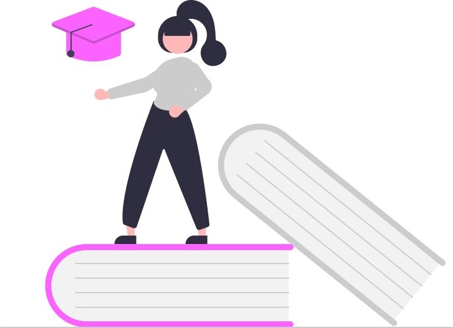

Our Mission
At Shakti, our mission is to create a safe and supportive online space where women can report crimes, seek assistance, and find empowerment. We are committed to harnessing the strength and resilience of women to combat gender-based violence and injustice. We strive to:- Raise awareness about women's safety issues and the impact of violence and harassment on individuals and communities.
-
 Provide a secure environment by offering a secure and confidential platform where women can report various forms of crime, including harassment, abuse, and discrimination, without fear of judgment or retaliation.
Provide a secure environment by offering a secure and confidential platform where women can report various forms of crime, including harassment, abuse, and discrimination, without fear of judgment or retaliation.
- Advocate for systemic change to address the root causes of violence against women and create a culture of respect and equality.
- Foster a supportive community where women can share their experiences, seek guidance, and support each other in their journey towards safety and empowerment.
What We Stand For
 Empowerment: We believe in empowering women with the knowledge, skills, and resources they need to protect themselves and advocate for their rights.
Empowerment: We believe in empowering women with the knowledge, skills, and resources they need to protect themselves and advocate for their rights.
Get Involved
Join us in our mission to create a safer world for women. Here's how you can get involved:- Volunteer: Volunteer your time and skills to support our programs and initiatives. Whether you're interested in advocacy, outreach, or event planning, there are many ways to make a difference.
-  Donate: Consider making a donation to Naari Shakti to support our work in providing essential services to survivors of gender-based violence. Your contribution will help us continue our mission of empowering women and upholding justice.
- Spread the Word: Share our website, resources, and social media posts with your friends, family, and networks. Together, we can raise awareness and inspire others to take action for women's safety.
Explore Our Website
Take a tour of our website to access resources, learn about upcoming events, and connect with our community. Here's what you'll find:- Safety Tips: Practical tips and advice for staying safe in various situations, from walking alone at night to navigating online spaces.
- Support Services: Information on emergency helplines, counseling services, legal aid, and other support resources for women in crisis.
- Resources: Articles, guides, and downloadable materials on women's safety topics, including domestic violence, sexual assault, and self-defense.
- Events: Calendar of upcoming events, workshops, and campaigns focused on raising awareness and promoting women's safety.
- Get Involved: Opportunities to volunteer, donate, or participate in advocacy efforts to support women's safety and empowerment.

Contact Us
 Have questions or need assistance? We're here to help. Contact us via email, or our online contact form, and a member of our team will get back to you as soon as possible.
Have questions or need assistance? We're here to help. Contact us via email, or our online contact form, and a member of our team will get back to you as soon as possible.
Email: shaktiproject@gmail.com
Join us in our mission to create a safer, more equitable world for women. Together, we can make a difference.